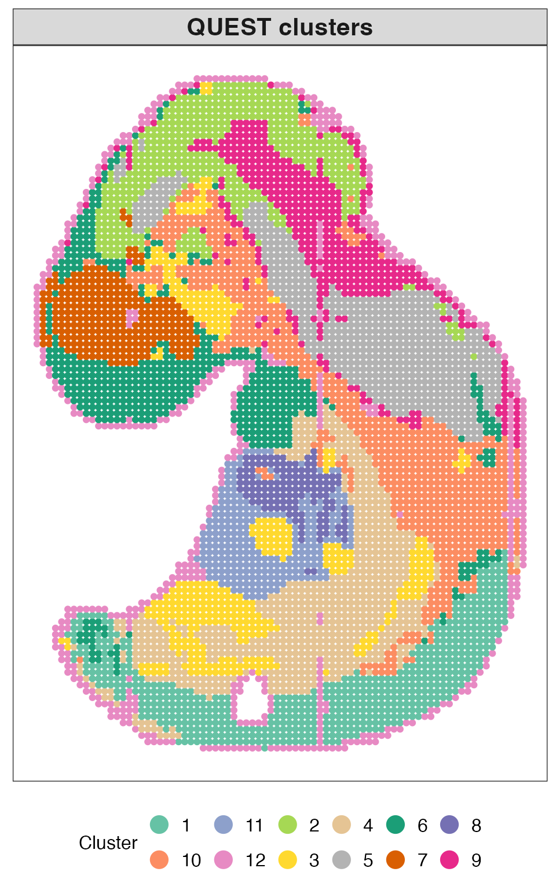
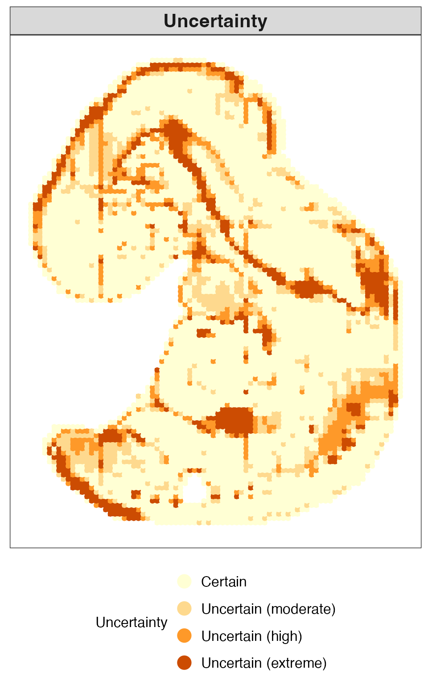
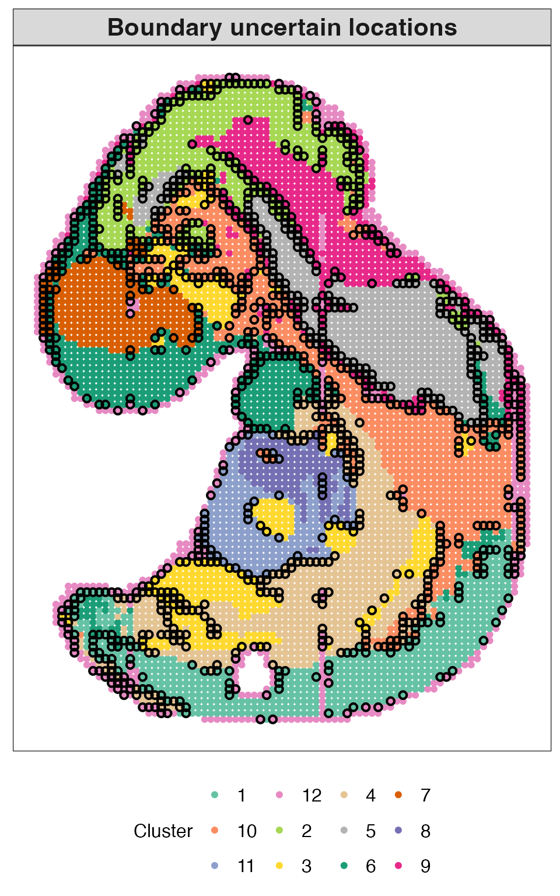
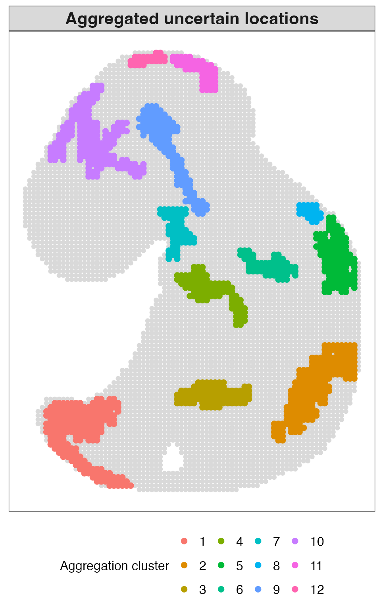
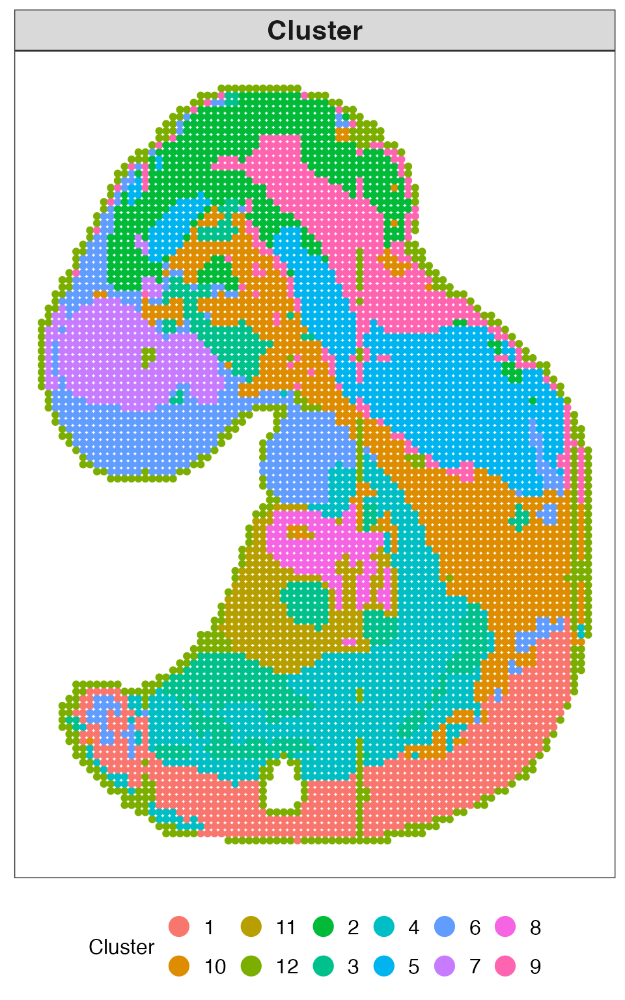
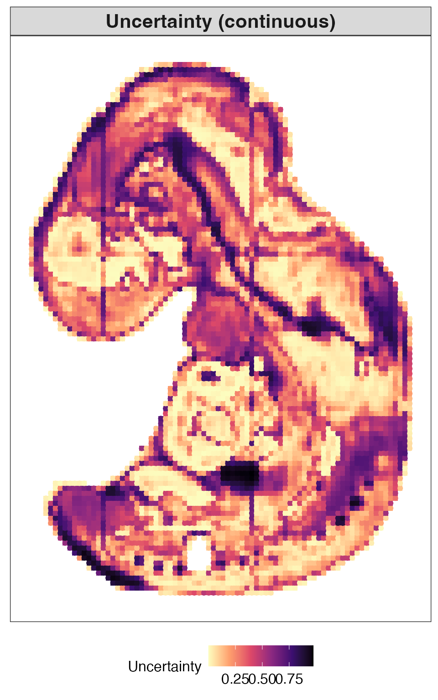
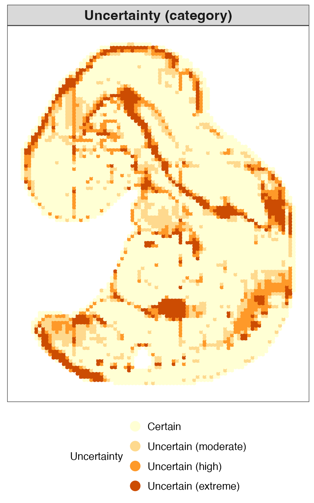
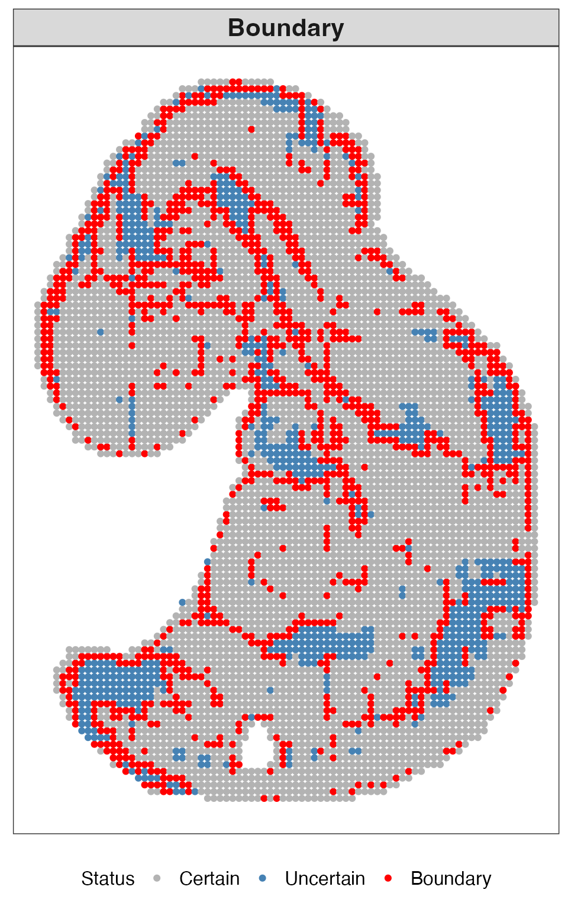
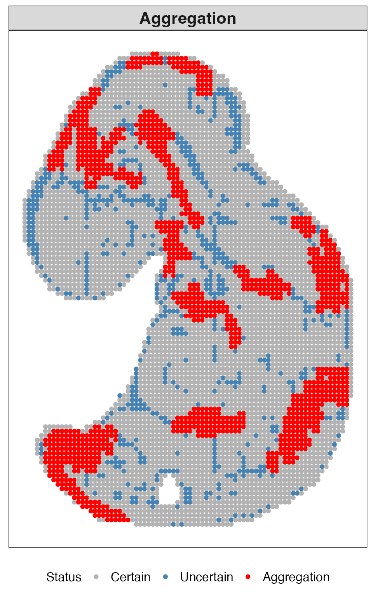

Overview
This tutorial presents a complete example analysis using QUEST on a Stereo-seq spatial transcriptomics data of the mouse embryo (E9.5).
Before running this tutorial, please make sure that the QUEST package has been installed. Detailed installation instructions are provided on the Installation page of the package website.
QUEST can be applied in two complementary ways:
- a step-by-step workflow, including fuzzy
clustering, uncertainty quantification, boundary detection, aggregation
detection, and visualization; and
- a one-step workflow using the wrapper function
quest(), which integrates all analysis steps into a unified pipeline.
The goal of this tutorial is not only to demonstrate the mechanics of the package, but also to illustrate how uncertainty quantification can provide additional insights beyond conventional hard clustering.
Load data
We next load the example dataset used throughout this tutorial, including the count matrix and spatial coordinates.
The example data can be downloaded from the following link:
After downloading, please place the files under the following directory:
data/StereoSeq_Embryo95/
load("../data/StereoSeq_Embryo95/dat_combined.RData")Count matrix
The count matrix represents gene expression measurements across spatial locations, where rows correspond to genes and columns correspond to spatial locations.
print(dat_cnt[1:3, 1:3])
#> 3 x 3 sparse Matrix of class "dgCMatrix"
#> 147_104 147_105 147_106
#> X1700007G11Rik 4.066529 2.528584 2.759596
#> X1700123O20Rik 2.620700 . .
#> X1810030O07Rik 1.997780 . .Spatial coordinates
The spatial coordinate matrix specifies the physical positions of each spatial location in the tissue, with each row representing one location.
print(dat_loc[1:3, ])
#> x y
#> 147_104 104 147
#> 147_105 105 147
#> 147_106 106 147Dimension reduction
QUEST operates on low-dimensional embeddings obtained from upstream methods. In general, we use spatially aware principal components (Spatial PCs).
The following code illustrates how these Spatial PCs can be generated using SpatialPCA.
# ST <- CreateSpatialPCAObject(
# counts = dat_cnt,
# location = dat_loc,
# project = "SpatialPCA",
# gene.type = "spatial",
# sparkversion = "sparkx",
# numCores_spark = 5,
# gene.number = 3000,
# min.loctions = 20,
# min.features = 20
# )
#
# ST <- SpatialPCA_buildKernel(
# ST,
# kerneltype = "gaussian",
# bandwidthtype = "SJ",
# bandwidth.set.by.user = NULL
# )
#
# ST <- SpatialPCA_EstimateLoading(
# ST,
# fast = FALSE,
# SpatialPCnum = 20
# )
#
# ST <- SpatialPCA_SpatialPCs(ST, fast = FALSE)The Spatial PCs used in this tutorial can be directly downloaded from the same data link, so they do not need to be recomputed.
load("../data/StereoSeq_Embryo95/pc.RData")The Spatial PCs matrix has the following dimensions, with rows representing spatial locations and columns representing principal components.
dim(pc)
#> [1] 5912 20A subset of the matrix is shown below for illustration.
print(pc[1:3, 1:3])
#> pc1 pc2 pc3
#> 147_104 -3.599563 14.11253 -12.76451
#> 147_105 -4.337513 14.61970 -11.71134
#> 147_106 -4.130162 14.37786 -12.59037Run QUEST step by step
Step 1: Fuzzy clustering with automatic fuzziness selection
We first perform fuzzy c-means clustering and automatically select the fuzziness parameter from a candidate grid using the XB index. This provides a flexible clustering framework while allowing the degree of fuzziness to be data-adaptive.
Main inputs of fcmclust_auto()
The most important inputs are:
-
x: a numeric matrix of dimension , where rows correspond to spatial locations and columns correspond to features; -
nclus: the number of clusters; -
vec_m: a numeric vector of candidate fuzziness parameters; -
nstart: the number of random initializations; -
iter_max: the maximum number of iterations for each initialization.
set.seed(2)
obj_fcm <- fcmclust_auto(
x = pc,
nclus = 12,
vec_m = seq(from = 1.1, to = 2.0, by = 0.1),
nstart = 50,
iter_max = 100,
verbose = FALSE
)The fitted clustering object can be inspected as follows. The output contains the selected fuzziness parameter, membership matrix, hard cluster labels, cluster sizes, and additional model information.
print(obj_fcm)
#> Fuzzy c-means clustering with automatic fuzziness selection
#>
#> Selected m:
#> [1] 1.3
#>
#> XB index:
#> [1] 0.7780135
#>
#> XB index over candidate m (first 5):
#> m xb
#> 1.1 0.8722102
#> 1.2 0.7988497
#> 1.3 0.7780135
#> 1.4 0.9253513
#> 1.5 1036.1610365
#> ... (truncated, use $xb_grid to view all values)
#>
#> Corresponding clustering result:
#>
#> Fuzzy c-means clustering with 12 clusters and 50 initializations
#>
#> Fuzziness parameter (m):
#> [1] 1.3
#>
#> Memberships (first 5 observations and first 3 clusters):
#> [,1] [,2] [,3]
#> [1,] 0.007483206 0.0006129729 0.0004307095
#> [2,] 0.004037587 0.0003647268 0.0002265688
#> [3,] 0.004846589 0.0004151032 0.0002562929
#> [4,] 0.014094660 0.0008083182 0.0005618637
#> [5,] 0.059729192 0.0016189063 0.0012030115
#>
#> Hard cluster labels (first 5 observations):
#> [1] "12" "12" "12" "12" "12"
#>
#> Cluster sizes:
#> [1] 606 496 425 709 628 554 284 136 470 811 262 531
#>
#> Final objective value:
#> 1087835
#>
#> Number of iterations until convergence:
#> 14Step 2: Uncertainty quantification
QUEST computes entropy-based uncertainty from the fuzzy membership matrix, yielding a location-level measure of clustering ambiguity. Larger entropy values indicate less confident assignments.
Main inputs of compute_uncertainty()
The most important inputs are:
u: the fuzzy membership matrix returned by fuzzy clustering.normalized: a logical value indicating whether the entropy is normalized to the range .
By default, entropy is normalized, which facilitates interpretation and comparability across datasets.threshold_method: a character string specifying the method used to define uncertain locations.
The default is"mean_sd", which defines uncertainty based on the mean and standard deviation of the entropy distribution.
Alternatively,"quantile"can be used to define uncertainty based on a specified quantile.threshold_scale: a numeric value controlling the threshold whenthreshold_method = "mean_sd".
By default, uncertain locations are defined as those with entropy greater than
That is, locations with entropy substantially higher than the threshold are classified as uncertain.
res_uncer <- compute_uncertainty(
u = obj_fcm$membership
)Step 3: Boundary detection
We next identify boundary uncertain locations based on spatial neighborhood structure. An uncertain location is classified as a boundary if its neighboring locations contain multiple distinct cluster labels, including its own label, and include at least one certain location.
Main inputs of detect_boundary()
The most important inputs are:
-
dat_loc: spatial coordinates; -
cluster: hard cluster labels from fuzzy clustering; -
is_uncertain: a logical vector indicating uncertain locations; -
n_neighbors: the number of nearest neighbors used in boundary detection.
res_boundary <- detect_boundary(
dat_loc = dat_loc,
cluster = obj_fcm$cluster,
is_uncertain = res_uncer$is_uncertain,
n_neighbors = 8
)Step 4: Aggregation detection
We then identify aggregated uncertain locations based on spatial neighborhood structure. An uncertain location is classified as aggregated if a substantial proportion of its neighboring locations are also uncertain.
Main inputs of detect_aggregation()
The most important inputs are:
-
dat_loc: spatial coordinates; -
is_uncertain: a logical vector indicating uncertain locations; -
n_neighbors: the number of nearest neighbors used in aggregation detection; -
distance_threshold: the distance threshold used to construct the connectivity graph; -
min_component_size: the minimum connected component size retained as an aggregated region.
res_aggre <- detect_aggregation(
dat_loc = dat_loc,
is_uncertain = res_uncer$is_uncertain,
n_neighbors = 8,
distance_threshold = 1.1,
min_component_size = 20
)Step 5: Visualization
Cluster labels
We first visualize the inferred cluster labels from QUEST to examine the overall spatial domain structure. Each point corresponds to a spatial location and is colored according to its assigned cluster.
plot_clusters(
dat_loc = dat_loc,
cluster = obj_fcm$cluster,
title = "QUEST clusters",
palette = c(
"#66C2A5", "#FC8D62", "#8DA0CB", "#E78AC3", "#A6D854", "#FFD92F",
"#E5C494", "#B3B3B3", "#1B9E77", "#D95F02", "#7570B3", "#E7298A"
)
)
#> Error in get(paste0(generic, ".", class), envir = get_method_env()) :
#> object 'type_sum.accel' not found
Categorical uncertainty
We next visualize the uncertainty of each spatial location as a categorical variable. This representation facilitates the identification of highly ambiguous regions and provides a concise summary of spatial uncertainty patterns.
plot_uncertainty(
dat_loc = dat_loc,
uncertainty = res_uncer$entropy,
mode = "category",
title = "Uncertainty"
)
Boundary uncertain locations
We then visualize boundary uncertain locations. These highlighted locations reveal transitional regions between spatial domains and provide a more refined characterization of domain interfaces than hard clustering alone.
plot_boundary(
dat_loc = dat_loc,
cluster = obj_fcm$cluster,
is_uncertain = res_uncer$is_uncertain,
is_boundary = res_boundary$is_boundary,
title = "Boundary uncertain locations",
color_mode = "cluster",
palette = c(
"#66C2A5", "#FC8D62", "#8DA0CB", "#E78AC3", "#A6D854", "#FFD92F",
"#E5C494", "#B3B3B3", "#1B9E77", "#D95F02", "#7570B3", "#E7298A"
)
)
Aggregated uncertain locations
Finally, we visualize aggregated uncertain locations. These aggregated regions reveal spatially connected clusters of uncertainty, highlighting areas of structural complexity or heterogeneity that are not well captured by hard clustering alone.
plot_aggregation(
dat_loc = dat_loc,
cluster = obj_fcm$cluster,
is_uncertain = res_uncer$is_uncertain,
is_aggre = res_aggre$is_aggre,
igraph_cluster = res_aggre$aggre_cluster,
title = "Aggregated uncertain locations",
color_mode = "igraph"
)
Run QUEST in one step
For convenience, the entire workflow can also be performed using the
wrapper function quest(). This function integrates
clustering, uncertainty quantification, optional boundary and
aggregation detection, and optional plotting. This is useful when a
compact end-to-end analysis is desired.
Main inputs of quest()
The most important inputs are:
-
x: low-dimensional embedding matrix; -
dat_loc: spatial coordinates; -
nclus: number of clusters; -
vec_m: candidate fuzziness parameters when automatic selection is used; -
boundary_n_neighbors: number of nearest neighbors used for boundary detection; -
aggregation_n_neighbors: number of nearest neighbors used for aggregation detection; -
aggregation_distance_threshold: graph distance threshold for aggregation detection; -
aggregation_min_component_size: minimum connected component size for aggregation detection; -
make_plots: whether to generate default plots.
Access results
The output from quest() contains the clustering results,
uncertainty estimates, optional boundary and aggregation results, and a
set of default visualizations.
names(res_quest)
#> [1] "clustering" "uncertainty" "boundary" "aggregation" "plots"
#> [6] "settings" "call"Visualization outputs
The plots generated by quest(make_plots = TRUE) are
intended for quick visualization. For publication-quality figures, users
are encouraged to call the plotting functions directly and customize
graphical parameters.
This plot shows the inferred spatial domains obtained from QUEST.
res_quest$plots$clusters
This plot visualizes the uncertainty at each spatial location as a continuous measure.
res_quest$plots$uncertainty_continuous
This plot presents uncertainty in a categorical form.
res_quest$plots$uncertainty_category
This plot highlights boundary uncertain locations identified by QUEST.
res_quest$plots$boundary
This plot shows aggregated uncertain regions, where clusters of uncertain locations form spatially coherent patterns.
res_quest$plots$aggregation
Summary
In this tutorial, we demonstrated how QUEST can be applied to spatial transcriptomics data to obtain fuzzy domain assignments, location-level uncertainty estimates, boundary uncertain locations, and aggregated uncertain regions. Together, these outputs provide a richer characterization of spatial domain structure than conventional hard clustering alone.
Session information
sessionInfo()
#> R version 4.3.3 (2024-02-29)
#> Platform: aarch64-apple-darwin20 (64-bit)
#> Running under: macOS 26.4
#>
#> Matrix products: default
#> BLAS: /Library/Frameworks/R.framework/Versions/4.3-arm64/Resources/lib/libRblas.0.dylib
#> LAPACK: /Library/Frameworks/R.framework/Versions/4.3-arm64/Resources/lib/libRlapack.dylib; LAPACK version 3.11.0
#>
#> locale:
#> [1] en_US.UTF-8/en_US.UTF-8/en_US.UTF-8/C/en_US.UTF-8/en_US.UTF-8
#>
#> time zone: America/Chicago
#> tzcode source: internal
#>
#> attached base packages:
#> [1] stats graphics grDevices utils datasets methods base
#>
#> other attached packages:
#> [1] Matrix_1.6-5 QUEST_0.1.0
#>
#> loaded via a namespace (and not attached):
#> [1] gtable_0.3.6 jsonlite_1.8.9 dplyr_1.1.4 compiler_4.3.3
#> [5] tidyselect_1.2.1 Rcpp_1.0.13-1 FNN_1.1.4.1 jquerylib_0.1.4
#> [9] systemfonts_1.1.0 scales_1.3.0 textshaping_0.4.1 yaml_2.3.10
#> [13] fastmap_1.2.0 lattice_0.22-6 ggplot2_3.5.1 R6_2.5.1
#> [17] labeling_0.4.3 generics_0.1.3 igraph_2.1.2 knitr_1.49
#> [21] htmlwidgets_1.6.4 tibble_3.2.1 desc_1.4.3 munsell_0.5.1
#> [25] RColorBrewer_1.1-3 bslib_0.8.0 pillar_1.10.0 rlang_1.1.4
#> [29] cachem_1.1.0 xfun_0.52 fs_1.6.5 sass_0.4.9
#> [33] viridisLite_0.4.2 cli_3.6.3 withr_3.0.2 pkgdown_2.1.1
#> [37] magrittr_2.0.3 digest_0.6.37 grid_4.3.3 rstudioapi_0.17.1
#> [41] lifecycle_1.0.4 vctrs_0.6.5 evaluate_1.0.1 glue_1.8.0
#> [45] farver_2.1.2 codetools_0.2-20 ragg_1.3.3 colorspace_2.1-1
#> [49] rmarkdown_2.29 tools_4.3.3 pkgconfig_2.0.3 htmltools_0.5.8.1